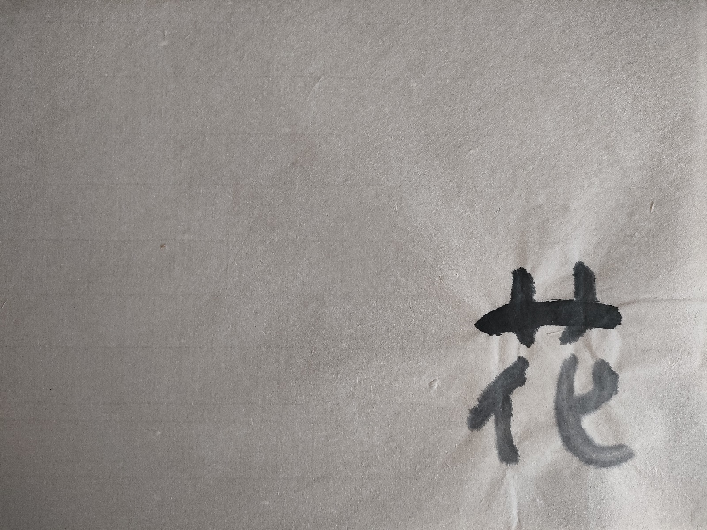
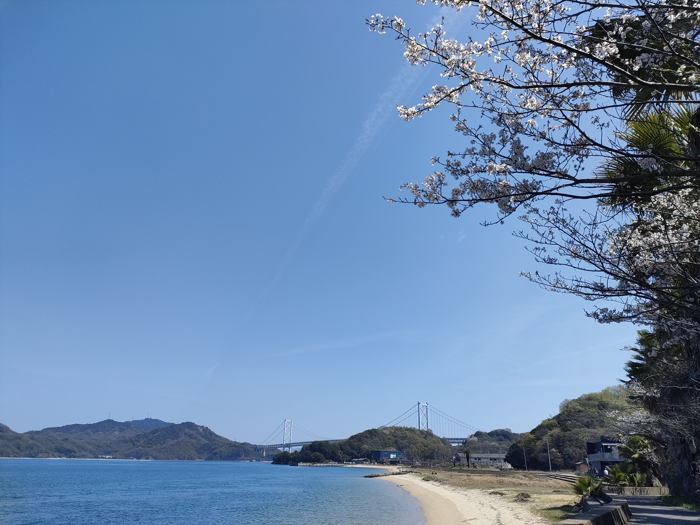
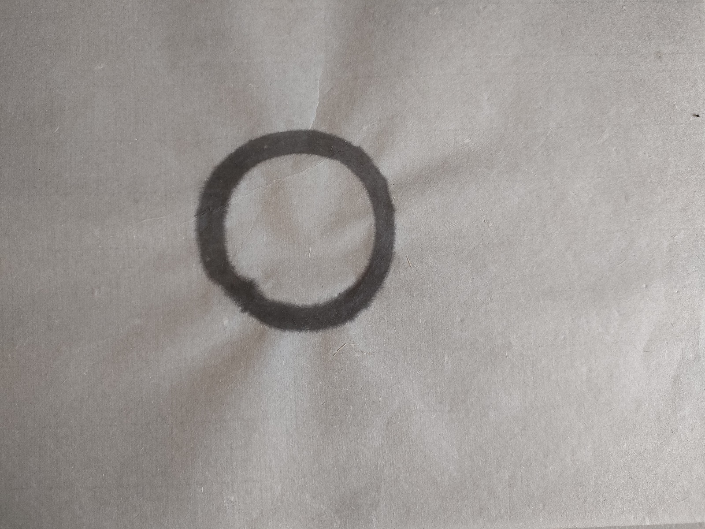
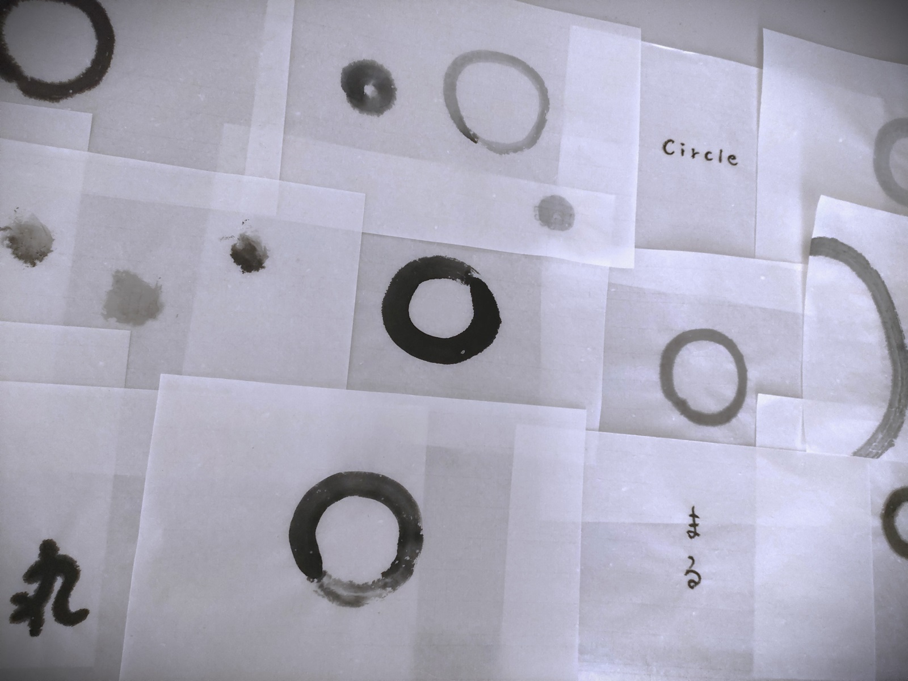
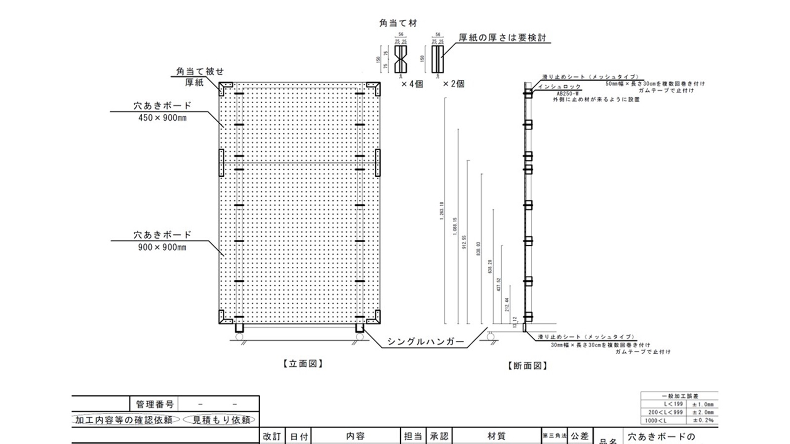
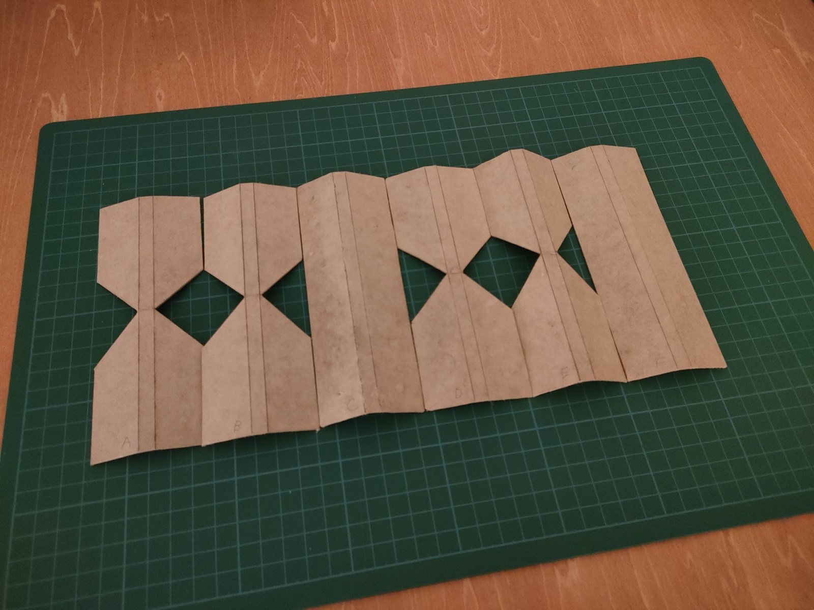
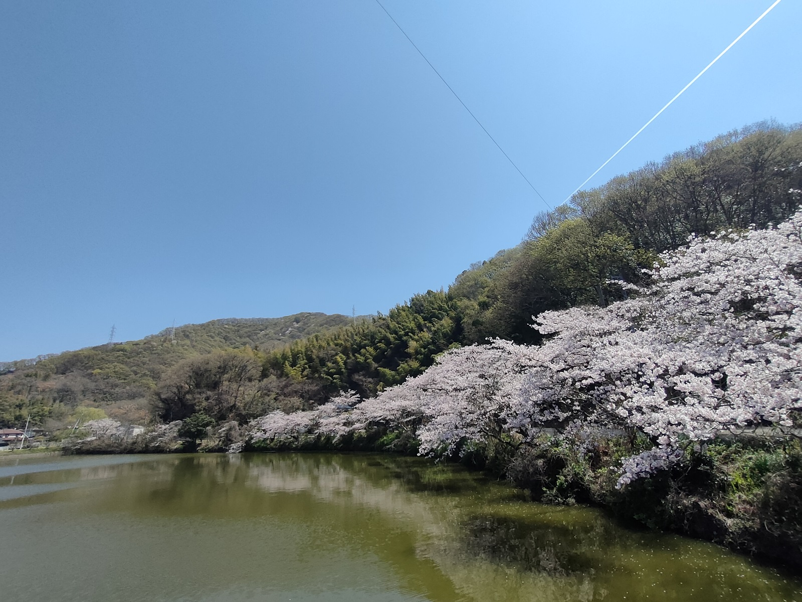
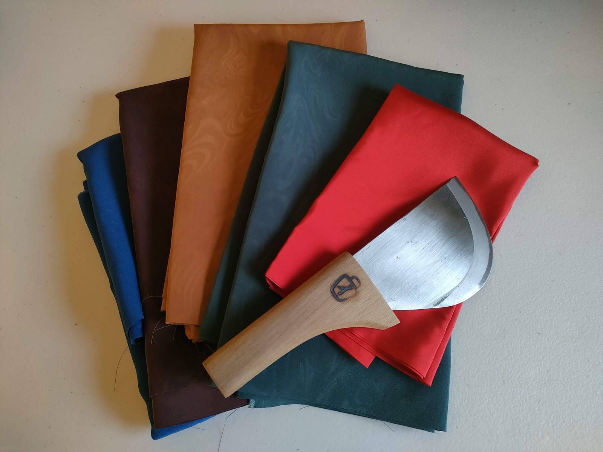

Tensho Serene Life

橋を渡る人や風、うずまく潮流と共に
島は、ただ孤立している場所ではありません。
橋が架かり、潮流が絶えず入れ替わるこの場所は、
新しい時代への通り道でもあります。

かつての喧騒が落ち着き、静かな時間が流れる今だからこそ、
私は、私は・・・
「個」としての自分を見つめ直したいと思いました。


そして九年以上をかけて伝統と向き合い、


現代のデジタル技術を編み合わせる場所に辿りつきました。
Analog & Digi Atelier @ Setouchi Island

温暖な気候に抱かれた穏やかな暮らしの中で、私が集めてきた素材たちと

価値観や美意識を共有し
手や指の感触を確かめながら形にし、
柿渋を塗布する前の刷毛のストローク練習